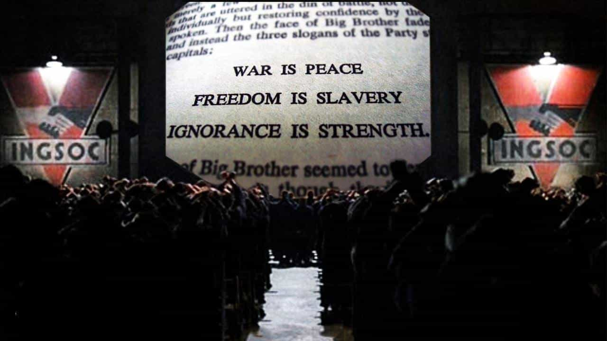

In order for a nation to survive, two critical emotions must be controlled. Contrary to popular belief, these emotions are not fear and greed—although these are very important to control, as well. Rather, it’s masculine aggression and feminine vanity that must be controlled…and we are doing a terrible job at this.
Unfortunately, over the past 70 years, we’ve seen sex roles and gender dynamics completely turned on their heads. Rather than men and women working together to create better relationships, more functional families, and more powerful countries, we’ve been pit against one another by toxic ideologies and ruthless demagogues.
It is not enough to simply know what is happening, however—we must know precisely how it’s happening, step by step, and more importantly, WHY it’s happening. In this article, I will explore why our society has gone so downhill so fast, and potential solutions we can integrate to remedy it (if we can save it, at all).
The Two Forces
As I said previously, there are two very delicate forces which must constantly be counter-balancing one another, and anytime they grow unbalanced, there will be chaos. These two forces are, of course, masculine aggression and feminine vanity. Too much masculine aggression, and a country becomes war-torn, unable to run itself or stay stable long enough to produce any sort of civilization (think the Middle East).
Too much feminine vanity, however, and the opposite occurs. Men become reclusive, because women become far too difficult to deal with. This is why we’ve seen the rise of the sigma male over the past 20 years—men who refuse to attach themselves to any sort of social hierarchy. They’re not alpha, beta, or omega. They just do as they do, without adhering to any sort of social group or workplace hierarchy.
As feminine vanity grows excessive, female hypergamy is given reign to run loose. Rather than men and women developing healthy relationships with one another, women become so conceited that they refuse to “settle” for anyone less than an alpha male Chad Thundercock, and thus we have a surplus of angry, bitter women who hit the wall at 30 and end up childless and alone.
It’s so obvious that it should go without saying, that we are currently in a serious imbalance. For far too long, masculine aggression has been hampered and stomped down by our effeminate school system, our brainwashing devices (aka TV’s), and our mass media control system. All the while, these things have encouraged women to do as they please, without any consequences or thought of their actions on a larger, societal scale.
Restoring the Balance
Balance will be restored, one way or another. There are only two ways for this imbalance to possibly be restored, and most men here will acknowledge, at least implicitly, that this is the case:
- Men in OTHER COUNTRIES restore the balance (by coming here en masse)
- Men in THIS COUNTRY restore the balance (by not being pussies)
Those are the only two options. There is no third option, where women somehow magically stop giving men 500,000 shit tests a day and step down to become good, faithful girlfriends, wives, and mothers. This will not happen. When a society reaches this critical imbalance, only one of two things can happen.
Of course, we all know what the elites (oy vey!) are pushing for. They want to bring millions of aggressive, young, fighting-age men to this country, to supposedly help combat “population decline.” We all know that this is complete horse shit, and that their true motive is to destroy America.
Even so, with the full force of the elites raining down upon us, there is hope. Over the past two years, we’ve seen more masculine energy emerge and come to the front of our socio-political battlegrounds than arguably any other time in history. For the first time in the past 70 years, men are reclaiming their manhood.
Let me reiterate that this is the only option. There is no magical world where everything just works out great, where we have millions of violent, aggressive 20-something-year-old men come into this country, and we retain our values as an Anglo-Saxon country. No. This will not happen. We either get our acts together, collectively, as men, or we watch our nation burn.
The Path Forward (2018-2020)
The next two years are of critical importance. We have collectively, successfully memed the most brutally alpha and pro-American president into office arguably since Ronald Reagan. This is not an opportunity that we can afford to squander—we must all begin proactively restoring the balance of masculinity in this country, from the top down, otherwise our nation will perish to globalists and their dumb, but useful allies.
There will be resistance, as there is whenever masculinity tries to assert itself. Pay no attention to this resistance. Simply follow the advice which the manosphere advocates for:
- Create an income independent of a massive, bureaucratic, globalist corporation
- Increase your testosterone levels (start by avoiding foods that kill testosterone)
- Lift weights, and become physically able to stand up for yourself
- Proactively participate in the upcoming midterms, and the Presidential Election of 2020
- Do everything you can to red pill those who are ready (emphasis on them being ready)
If we, collectively, as a group of thousands of like-minded men all across the nation can successfully pull this off, we will see a resurgence of economic, political, and social growth which will have been unprecedented.
If we do not pull it off however, and our nation succumbs to the manipulations of the elite, a far more grim and sinister future will play out.
The Alternative

If we do not successfully reclaim the balance of masculine aggression and feminine vanity in this country, all will be lost, and we will be forced to either live through hell, or leave our homelands. Here’s what to expect over the next decade or so, if a social justice warrior is elected President in 2020, and we lose the culture wars:
- Increasing surveillance over the internet
- More thought crime policies instituted into law
- The figurative castration of men all across the country
- Eventual race wars, or religious wars, spurred on primarily by Islamic migrants
This is non-negotiable. If we lose the culture wars to SJW’s over the next several years, we will begin to see lobbying to shut down any and all manosphere websites dedicated to spreading the truth. We have already seen PayPal, YouTube, Amazon, Facebook, Twitter, and Google begin to censor people like Roosh, Alex Jones, Donald Trump, and other conservative/red pilled speakers. We cannot afford to stand this any longer.
If we lose these mediums to the globalists, they will easily gain the support of the public to institute thought crime policies into our legal system. You have a book by Bronze Age Pervert, that Amazon can track from your order history? NAZI SCUM! You’re going to prison. It doesn’t matter that you didn’t actually hurt anyone in any way shape or form, because you had an opinion that the globalists dislike.
As this begins to happen, men will self-imprison all over the nation. Some will fight, of course, and maybe win (if we’re lucky). Others will leave and attempt to gain citizenship in more male-friendly countries such as Denmark, Austria, and Poland. The rest will be forced to hang their heads in perpetual shame.
Eventually, as the population of third world migrants explodes, and tribalism is exacerbated by the polarizing media, we will begin to see rampant terrorist attacks, which are already happening in Germany, The UK, and other nations around the cucked European Union. Inevitably, this will end in a civil war.
It’s Our Choice
I have presented to you the only two choices that we have, and to me, the decision is quite simple. We can either sit around passively, and squabble amongst ourselves over stupid theories and philosophies, or we can take action to better ourselves and improve the stance of our nation.
The choice is clear to me. We either succumb to globalist propaganda, see the death of masculinity in the West, and see freedom of speech die as it is destined to do, or we fight back and create a better future. Some may say this is melodramatic. I would say that a mere cursory glance at history will prove otherwise.
Read Next: Cultural Collapse Theory: The 7 Steps That Lead To A Complete Culture Decline